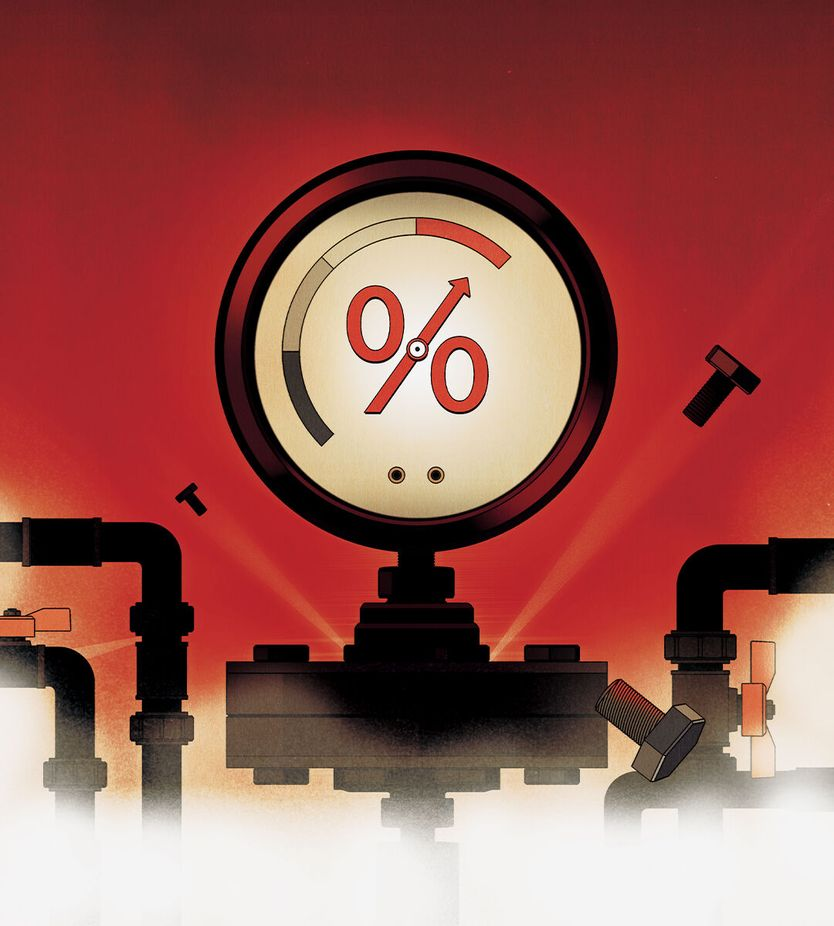
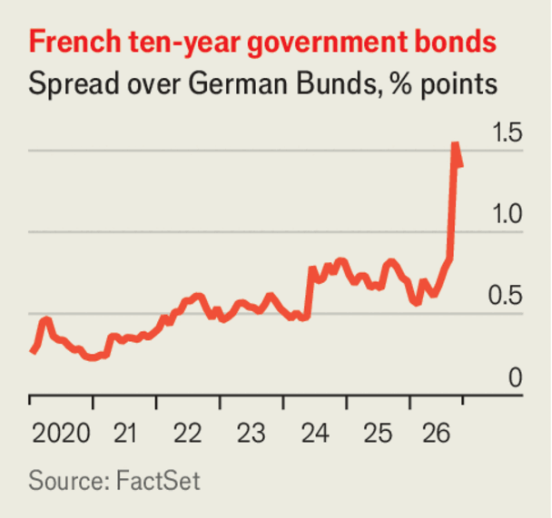

债券市场会爆雷吗？
Will bonds blow up?
一场政府债务危机正在逼近

- 五年前借款成本极低，公共债务看似几乎没有代价；如今投资者抛售债券，许多富裕大国的融资成本升至上世纪90年代或本世纪初以来最高，而债务规模相对经济总量约为世纪之交的两倍，各国预算承受巨大压力。
- 这轮抛售部分源于好消息：美国经济强劲、AI公司大举投资数据中心，推高了利率。但伊朗战争推高通胀、民粹时代经济机构公信力受疑，投资者担心政府用通胀稀释债务，这才是更深层的推升力量。
- 各国处境分化：美国靠美元作为全球储备货币的地位仍有余裕，日本暂无债券挤兑之忧，风险最大的是欧洲。英国和意大利脆弱，法国压力居首——今年赤字预计达GDP的5.4%，勒庞虽在民调领先但主张缺乏可信度。
- 文章主张，央行不应为拒不整顿财政的政府兜底，否则长期债券会跌得更惨、选民终将报复。出路在于政客向选民讲清：公共债务必须受控，必须共同承担代价。
银行家过去常说，国家不像企业，不会破产。他们把这句令人安心的话说了一遍又一遍，直到上世纪80年代一波拉美国家相继债务违约。如今，类似的冲击是否很快会戳破富裕世界的自负？
五年前，借贷成本低到公共债务几乎显得没有代价。如今投资者抛售债券，许多富裕大国的政府借款成本比上世纪90年代或本世纪头十年任何时候都高。由于主要发达经济体的公共债务相对于GDP的规模约为世纪之交的两倍，结果是预算承受巨大压力。
即便在最新一轮债券抛售之前，这些政府今年预计就要把8%的税收收入用于支付净债务利息，而人口老龄化和战争威胁正不断制造增加支出的压力。如今它们为过去的债务再融资必须付出更多，同时许多国家仍在大手大脚地继续借债。总有一天，投资者会反抗。
具有讽刺意味的是，正如我们报道的那样，今年债券市场抛售的一部分原因是好消息。美国经济正在繁荣：失业救济申请人数低，经济增长年率可能超过3%，生产率增长看起来也很强劲。这鼓励了投资。人工智能公司争相建设数据中心，在全球市场上与政府争夺资本。结果是利率上升。
这加剧了推高债券收益率中那些不那么受欢迎的力量。伊朗战争带来的能源冲击推高了通胀，而在民粹主义时代，人们对经济机构的公信力也在暗暗生疑。美国总统唐纳德·特朗普最近若有所思地说，通胀可以“非常迅速地”削减债务，并再次抨击美联储未能降息。法国总统选举中的民粹左翼候选人让-吕克·梅朗雄荒谬地指责法国央行行长犯有叛国罪。债券投资者目光投向遥远的未来，察觉到各国政府将用通胀掏空他们钱包的危险日益增长。
债券市场抛售的直接冲击因国而异。美国正认识到，其受AI推动的扩张对偿债帮助不大，因为利息成本会随增长同步上升。联邦政府约占GDP 6%的年度预算赤字不可持续。幸运的是，山姆大叔仍拥有发行全球储备货币的巨大优势。随着近几周债券收益率上升，美元大幅升值。财政清算终将到来——但还不是现在。
另一个长期令人担忧的日本，目前也还撑得住。其十年期国债收益率自1996年以来首次突破3%，而且它还在筹划一轮不明智的大手笔支出。但通胀随利率一同上升。由于经通胀调整后的利率仍然较低、政府赤字不大，债务占经济的比重正在缩小。情况可能生变。而如果日本人开始抛售其庞大的海外资产，金融震荡将波及世界其他地区。但日本政府目前尚未面临债券遭挤兑的前景。
欧洲才是债务危机风险最大的地方。AI热潮推高了它的资本成本，但与美国相比，它从经济增长中获得的提振要小得多。这个能源进口型经济体正因高企的燃料价格而受损，若冬季寒冷，由于全球液化天然气可能短缺，损失还会更大。尽管一些审慎的政府——包括德国、北欧国家和瑞士——财政管理得当，但英国、法国和意大利正在摇晃。
英国在2022年已经历过一场债券市场反抗。受此警醒，它修正了方向，但债务与GDP之比仍在上升，其政客尤擅推迟削减开支，最近承诺的养老金改革就是一例。意大利的净债务大致稳定，但占GDP 129%的水平仍然过高。它很脆弱，一场恐慌就可能击垮它。
法国承受的压力最大。其预算赤字今年预计为GDP的5.4%。《经济学人》计算，以当前的经济增长、若法国按五年期债券当前收益率为其全部借款再融资，要稳住债务就需要超过GDP 4%的紧缩。然而该国正被学生抗议所困，议会连一项规模只有上述十分之一的削减预算都难以通过。

投资者最近迫使法国为十年期借款支付比德国高1.5个百分点的利率——这是欧元区债务危机以来的最高利差。2027年总统选举之前，民粹右翼政党“国民联盟”的玛丽娜·勒庞在民调中领先。10月6日，她承诺到2032年将预算削减GDP的3%，并使债务占GDP之比减半。债券收益率小幅下跌，但勒庞缺乏可信度。在人均寿命不断延长的同时，她仍誓言降低退休年龄，因此并未直面法国公共支出中最大的一块。
法国债券遭挤兑的可能性是存在的。如果发生，政府可能不是以紧缩应对，而是要求欧洲央行（ECB）纾困。按规矩，各国应先整顿好财政，欧洲央行才能购买其债务，但实际上，防止纾困的护栏比十年前更弱了。在与欧洲央行的“斗鸡博弈”中，一位民粹主义总统很可能会赢；因为没有法国，欧盟就无法存续。
对于那些断然拒绝平衡财政的政府，央行出手纾困将是个错误。央行的职责是疏通金融管道，而不是为数十年的鲁莽借贷背书。如果央行变成财政部的提款机、而非物价稳定的担保人，长期债券将被抛售得更厉害。选民终将报复。在法国和其他地方，最好的出路是政客向选民解释：公共债务必须得到控制，大家必须共同不惜一切代价。